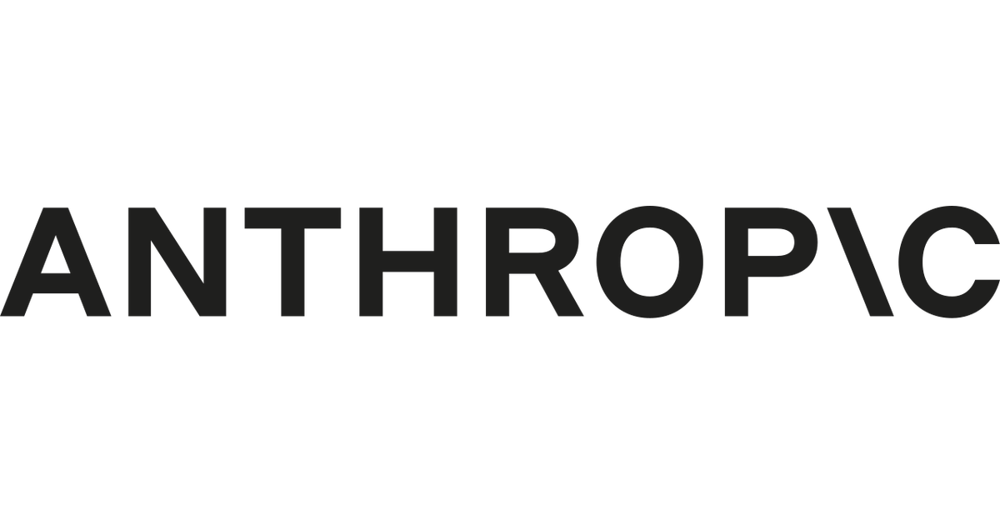

import anthropic
client = anthropic.Anthropic()
response = client.messages.create(
model="claude-sonnet-5",
max_tokens=1024,
system="Answer in one sentence.",
messages=[{"role": "user", "content": "What is a content block?"}],
)
The official anthropic Python SDK talks to Claude through one method, client.messages.create(). Roles, content blocks, tools, and retrieved documents are fields on that call — not separate endpoints.
1 Messages
Anthropic() reads ANTHROPIC_API_KEY from the environment. Every request is stateless: resend the full messages list each turn. This post uses claude-sonnet-5, the current Sonnet API id.
On that model, messages accepts two roles:
user— the human turn, or atool_resultyou are sending back.assistant— a prior model turn you are replaying.
System instructions are a top-level system parameter, not a role in that list — a string, or a list of text blocks. max_tokens is required.
The Opus-tier models take a third role. On claude-opus-5, claude-opus-4-8, claude-fable-5 and claude-mythos-5 you can append {"role": "system", "content": ...} inside messages to give the model a new operator instruction part-way through a conversation. Rewriting the top-level system would say the same thing and throw the cached prefix away with it; a message appended at the end does not. It cannot be the first entry, and it has to be either the last one or followed by an assistant turn. claude-sonnet-5 rejects the role.
A string content is shorthand for one text block. The response content is always a list; do not assume response.content[0].text. Streaming, timeouts, and input_json_delta are covered in Waiting, and Not Waiting. Schema-constrained JSON is covered in Stop Parsing Prose.
2 Content blocks
Each block has a type. Inspect block.type before reading any other field. claude-sonnet-5 may emit a thinking block before text; a tool call adds another.
Documented input and output types used in this post:
text— ordinary prose. Stringcontentexpands to this.image— asourceobject (base64,url, orfile/file_id).document— plain text, PDF, or custom content; optionalcitations.search_result— a retrieved hit you already have, also citation-capable.tool_use— model output:id,name,input.tool_result— your follow-up:tool_use_idpluscontent.thinking/redacted_thinking— reasoning blocks. Pass them back unchanged on the next turn if the API returned them.
for block in response.content:
if block.type == "text":
print(block.text)
elif block.type == "tool_use":
print(block.name, block.input)Unknown types should be ignored or forwarded, not parsed as text.
3 Tools
A client tool is a function you run. Pass name, description, and a JSON Schema input_schema. The model returns stop_reason="tool_use" and one or more tool_use blocks. You execute the function, then send a user message whose content is a tool_result whose tool_use_id matches.
A server tool (web_search, web_fetch, code_execution, and similar) runs on Anthropic’s infrastructure. You declare it by type and name; you do not execute it or invent a tool_result for it.
The loop for a client tool is always: request → tool_use → your code → tool_result → request again, with both the assistant turn and the result appended.
3.1 Stop reasons
stop_reason says why the model stopped. It has six values, not two:
end_turn— finished on its own. Read the text.stop_sequence— hit a stop sequence you configured. Also finished.tool_use— wants tools run. The loop above.max_tokens— cut off part-way. Retry with a bigger cap; do not read it as an answer.pause_turn— a server tool hit its own iteration limit. Send the history back unchanged to resume.refusal— declined on safety grounds. Only here isstop_detailsfilled in; it isnullfor the other five.
A loop written as while response.stop_reason == "tool_use" exits on the other five. Two of those exits are right — end_turn and stop_sequence really are finished. The remaining three are not, and each hands the caller a partial answer with no error. The Orchestrator-Worker Loop branches on all six and sets the budgets that stop a run going forever.
3.2 Tool runner
The SDK will run that loop for you. Decorate a function with @beta_tool, pass it to client.beta.messages.tool_runner(...), and call runner.until_done(). It dispatches the calls, appends the results, and returns the final message. The helper lives on client.beta.messages, so it needs the beta namespace.
Write the loop by hand once, to see what the runner is doing. Use the runner in production.
4 A tool-use round trip
The dict below is synthetic. Three invented refund rows stand in for an internal policy store a support bot would query. A real policy table would be confidential, and it would be out of date by the time you read this. Neither matters here: what the example shows is the shape of the blocks going in and out, not the rows. No live system is called; this post has no API key, so the cell is not executed.
import anthropic
POLICIES = {
"standard": "Refunds within 30 days of purchase, unused items only.",
"plus": "Refunds within 60 days; opened software is excluded.",
"enterprise": "Refunds require a ticket and manager approval within 90 days.",
}
def lookup_policy(plan: str) -> str:
return POLICIES.get(plan, "No policy found for that plan.")
client = anthropic.Anthropic() # reads ANTHROPIC_API_KEY
tools = [
{
"name": "lookup_policy",
"description": "Return the refund policy text for a subscription plan.",
"input_schema": {
"type": "object",
"properties": {
"plan": {
"type": "string",
"enum": ["standard", "plus", "enterprise"],
"description": "The customer's subscription plan.",
}
},
"required": ["plan"],
},
}
]
messages = [
{"role": "user", "content": "What is the refund window on the Plus plan?"},
]
response = client.messages.create(
model="claude-sonnet-5",
max_tokens=1024,
system="Answer only from lookup_policy. If the tool returns nothing, say so.",
tools=tools,
messages=messages,
)
if response.stop_reason == "tool_use":
messages.append({"role": "assistant", "content": response.content})
results = []
for block in response.content:
if block.type == "tool_use":
results.append(
{
"type": "tool_result",
"tool_use_id": block.id,
"content": lookup_policy(block.input["plan"]),
}
)
messages.append({"role": "user", "content": results})
response = client.messages.create(
model="claude-sonnet-5",
max_tokens=1024,
system="Answer only from lookup_policy. If the tool returns nothing, say so.",
tools=tools,
messages=messages,
)
print(response)
text = next(b.text for b in response.content if b.type == "text")
print(text)The objects below are hand-written to show the two Message shapes that loop produces. They are not a captured transcript.
First return, stop_reason="tool_use":
Message(
id='msg_01SimulatedFirstTurn000000001',
type='message',
role='assistant',
model='claude-sonnet-5',
content=[
ToolUseBlock(
id='toolu_01SimulatedLookup00000001',
name='lookup_policy',
input={'plan': 'plus'},
type='tool_use',
)
],
stop_reason='tool_use',
usage=Usage(input_tokens=412, output_tokens=56),
)Second return, after tool_result:
Message(
id='msg_01SimulatedSecondTurn00000001',
type='message',
role='assistant',
model='claude-sonnet-5',
content=[
TextBlock(
type='text',
text='The Plus plan allows refunds within 60 days; opened software is excluded.',
)
],
stop_reason='end_turn',
usage=Usage(input_tokens=481, output_tokens=24),
)Check stop_reason before reading text. This exchange only produces two of the six: tool_use means there is no final answer yet, end_turn is the text turn. A loop that meets the other four still needs the branches above.
5 RAG
The SDK has no vector store and no embeddings client. Retrieval is your job; Claude only sees what you put on the next request.
Three patterns the Messages API actually supports:
- Stuff the hits. Put retrieved text in the user turn as
documentorsearch_resultblocks, then ask the question as atextblock. - Citations. Set
citations={"enabled": True}on those documents (all or none in the request). The model can emit citation blocks pointing at spans. Citations cannot be combined with structured outputs (output_config.format). - Retrieval as a tool. Expose
search_kb(or similar) as a client tool. Claude decides when to call it; you run the retriever and return atool_result. Same loop aslookup_policyabove.
A stable document prefix can carry cache_control={"type": "ephemeral"} so later turns reuse it at cache-read prices. Changing the prefix, the tool list, or the model id misses the cache.
5.1 Embeddings and stores
Anthropic does not offer an embedding model. The docs name Voyage AI as the provider to start with (voyageai package, VOYAGE_API_KEY). Use voyage-4 for a general index; input_type="document" on ingest and input_type="query" at search. Assess other vendors if the domain needs it.
The SDK still has no vector store. Typical indexes for the Voyage vectors:
- pgvector — default when you already run Postgres. Hosted as RDS, Cloud SQL, Azure Database for PostgreSQL, Supabase, or Neon.
- Pinecone — managed, serverless. Anthropic’s RAG cookbook uses it.
- Qdrant or Weaviate — self-host or their clouds when you want an OSS engine and hybrid (keyword + vector) search. Weaviate vs Pinecone compares the two; Building a Simple Vector Database shows the FAISS-shaped core.
5.2 Hosting
Claude itself is not only api.anthropic.com. The same Python package exposes first-party plus cloud hosts:
Anthropic()— first-party Messages API.AnthropicAWS— Claude Platform on AWS (anthropic[aws]).AnthropicBedrockMantle— Amazon Bedrock (anthropic[bedrock]).AnthropicBedrockstill works, but it is the olderbedrock-runtimeInvokeModel path; new code wants the Mantle client.AnthropicVertex— Google Vertex AI (anthropic[vertex]).AnthropicFoundry— Microsoft Foundry.
Who runs the service decides what you get. Claude Platform on AWS is Anthropic-operated: AWS sign-in and billing, the first-party API surface, same-day feature parity, and plain model ids. Bedrock and Vertex are partner-operated, so each has its own prices, its own release lag, and a smaller feature set — and Bedrock prefixes the model id (anthropic.claude-sonnet-5). Foundry bills through the Microsoft Marketplace at first-party rates.
Voyage embeddings are a separate key: Voyage’s API, or Voyage on AWS Marketplace. The vector store is a third bill — Pinecone, Qdrant Cloud, Weaviate Cloud, or pgvector on the Postgres you already pay for.
6 Audio
The Messages API has no speech endpoint and no audio content block. The OpenAI-compatible surface ignores audio and input_audio fields.
Claude Code /voice dictation is a CLI product feature. It is not client.messages.create().
Spoken I/O is a second vendor. Anthropic’s cookbook builds a low-latency voice loop with ElevenLabs for STT and TTS around a streaming Claude turn. Keep Claude on text; send transcripts in and pipe tokens out to ElevenLabs. Voice AI architectures (2026) compares ElevenLabs to the rest of that market.
7 CLAUDE.md
CLAUDE.md is a Claude Code convention: a markdown file the coding agent reads at session start and holds as project context. Analogues are AGENTS.md and editor rule files. This repository’s root CLAUDE.md is one — render commands, register, freeze rules.
client.messages.create() does not load it. Nothing in the Python SDK opens the working tree or injects a file by that name.
For an API app, put the same rules in system (optionally as cached text blocks). For a coding agent, keep them in CLAUDE.md and let the agent host load them. Do not expect a claude_md= parameter.
Messages. Stay. Stateless. Voyage. Embeds. Stores. Host. Voice. Needs. ElevenLabs.
8 References
- Anthropic: Messages API
- Anthropic: Tool use
- Anthropic: Citations
- Anthropic: Embeddings (Voyage)
- Anthropic: Python SDK
- Anthropic cookbook: RAG
- Anthropic cookbook: ElevenLabs voice
- Claude Code: Memory / CLAUDE.md
- Claude Certified Architect, Week 1: The Orchestrator-Worker Loop — this blog; the loop that branches on every
stop_reasonthis post lists.